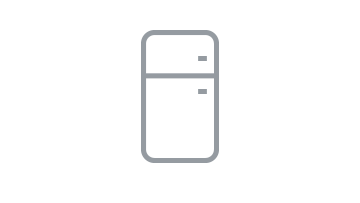
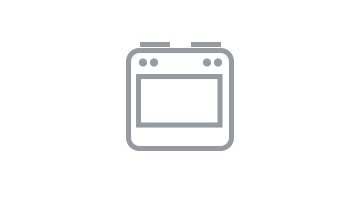
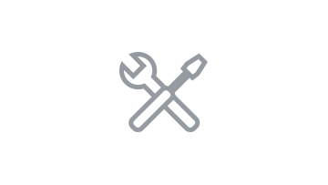

Oddajswój sprzęt AGD w profesjonalne ręce, a My przywrócimy go do pełnej sprawności. Serwisanci,
którym
zlecimy naprawę dadzą ci jednocześnie 12-miesięczną gwarancję na naprawę, jako dowód ich
profesjonalizmu
i
niezawodności.
Mówiąc inaczej naprawiamy różne urządenia AGD
Analogicznie do usług zapewniających serwis pralki, świadczymy usługi serwisu innych urządzeń AGD. W związku
z tym, jeżeli masz zepsuty inny sprzęt niż pralka, możesz naprawić więcej uszkodzonych urządzeń podczas
jednej wizyty. Podsumowując, zobacz jaki jeszcze sprzęt serwisowany jest przez naszych techników.
Pralki
Gwarancyjny i pogwarancyjny serwis pralek i suszarek do ubrań znanych producentów sprzętu AGD.
Kuchenki
Kuchenki elektryczne najpopularniejszych marek producentów sprzętu AGD.
Zmywarki
Pogwarancyjna naprawa zmywarek i innych urządzeń AGD w twojej kuchni.

Lodówki
Bezzwłoczna naprawa lodówki, zamrażarek oraz innego sprzętu chłodniczego w twoim domu.

Piekarniki
Naprawiamy piekarniki elektryczne i inne niesprawne urządzenia AGD w twojej kuchni.
Pogotowie Techniczne
Cieknący kran? Pomożemy Tobie w rozwiązaniu tych i innych problemów technicznych w twoim domu.
Serwis Klimatyzacji
Sprzedaż, serwis gwarancyjny i pogwarancyjny klimatyzacji. Wycena i doradztwo GRATIS!

Serwis AGD
Świadczymy inne usługi z zakresu serwisu AGD. Skontaktuj się z nami i dowiedz się więcej.
Obecnie świadczymy także usługę pogotowia technicznego, dzięki którem możesz zgłaszać inne nietypowe usterki
i naprawy. Gdzie może to być np. cieknący kran czy usuwanie awarii wodno – kanalizacyjnej. Od razu zadzwoń
do nas i porozmawiaj z konsultantem o tym jakie naprawy chciałbyś zlecić.
Jak szybko zlecić naprawę?
Z nami szybko i sprawnie zlecisz naprawę swojego sprzętu AGD. Wystarczą 3 kroki.
Zadzwoń
Teraz zadzwoń pod numer 456-342-897 lub napisz wiadomość na adres email i porozmawiaj z naszym
konsultantem, który umówi serwisanta.
Wizyta serwisanta
Następnie serwisant przyjedzie pod wskazany adres i dokona oceny sytuacji, oszacuje wartość
części do
naprawy oraz wyceny serwisu sprzętu AGD.
Naprawa AGD
Natychmiast naprawimy sprzęt AGD, wymienimy zużyte podzespoły, dając Tobie aż dwa lata gwarancji
na
części użyte przy naprawie usterki.
Ile kosztuje naprawa?
W przypadku każdego urządzenia technicznego, z czasem części i podzespoły ulegają eksploatacji. Z tego powodu
przestają prawidłowo funkcjonować lub w ogóle odmawiają posłuszeństwa i nie chcą działać. W takiej sytuacji
nie musimy od razu kupować nowego sprzętu, często wydając sumy przekraczające tysiąc złotych. Zazwyczaj
znacznie lepiej przeprowadzić naprawę. Dzięki temu w większości przypadków sprzęt po reperacji może działać
jeszcze przez długi czas. Ostatecznie w końcowym rozrachunku oszczędzają sobie Państwo niepotrzebnego
wydatku.
Podsumowując, trudno oszacować koszty naprawy nie znając przyczyn awarii. Ponieważ cena naprawy zależna jest
od kilku czynników. W istocie Serwis AGD może dokonać wstępnej wyceny telefonicznej lub jeżeli jest to
niemożliwe wycenę przeprowadzi po oględzinach na miejscu. Odpowiednio wyjaśniając szacunkowy koszt usługi, w
tym cenę naprawy, koszt części części zamiennych i czas potrzebny na usunięcie awarii. Pod warunkiem, że
jest to możliwe. Dlatego należy pamietać, że wycena zwykle jest przybliżona i faktyczny koszt przedstawiany
jest, gdy zostanie wykonana pełna diagnoza problemu. Niemniej jednak w większości przypadków koszt naprawy
jest zdecydowanie niższy od zakupu nowego urządzenia.
★★★★★
Naprawa została wykonana zgodnie z oczekiwaniami. Rzetelna firma. Polecam!!!
Alicja S.
Szczecin
★★★★★
Dojazd do klienta. Szybka diagnoza. Zamówione części po 2 dniach zamontowane. Szybko, sprawnie i za
rozsądne pieniądze. Polecam